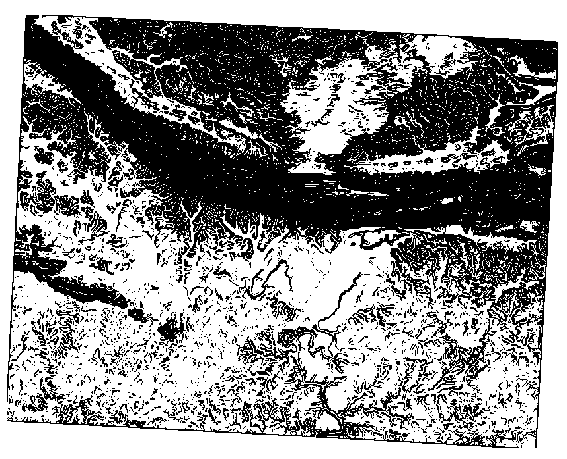
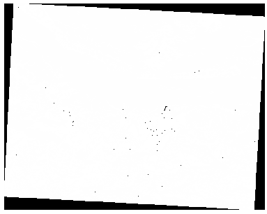

重要
翻訳は あなたが参加できる コミュニティの取り組みです。このページは現在 100.00% 翻訳されています。
7.3. レッスン: 地形解析
ある種のラスタからはそれが表す地形の洞察をより多く得ることができます。数値標高モデル(DEM)がこの点では特に有用です。このレッスンでは先ほどからの住宅開発案の調査地域についてより詳しく調べるのに地形解析ツールを使用します。
このレッスンの目標: 地形に関する詳細な情報を取得するために地形解析ツールを使用します。
7.3.1. ★☆☆ （初級レベル） 理解しよう: 陰影図を計算する
前のレッスンで使用したのと同じDEMレイヤを使用することにします。この章をゼロから始める場合は、 ブラウザ パネルを使用して、 raster/SRTM/srtm_41_19.tif を読み込んでください。
DEMレイヤは、地形の標高を表示しますが、少し抽象的に見えることがあります。DEMレイヤは、必要な地形の3D情報をすべて含んでいますが、3Dオブジェクトのようには見えません。地形の印象を良くするために、陰影図 を計算することができます。これは、光と影を使って地形をマッピングするラスタで、3Dに見える画像を作成することができます。
ここでは、 メニューにあるアルゴリズムを使用することにします。
メニューをクリックします
このアルゴリズムでは、光源の位置を指定することができます: 方位角(azimuth)`は0（北）から90（東）、180（南）、270（西）の値を持ち、 :guilabel:`太陽高 は光源の高さを0から90度までで指定します。
以下の値を使用することにします:
Z係数 に
1.0方位角（水平角） に
300.0°太陽高 に
40.0°

新しいフォルダ
exercise_data/raster_analysis/にhillshade.tifという名前でファイルを保存します最後に 実行 をクリックします
hillshade と呼ばれる新しいレイヤが次のように表示されます:

きれいで3次元的に見えますが、これは改善できるでしょうか? 陰影図はそれだけでは石膏模型のように見えます。どうにかしてそれを他のよりカラフルなラスタと一緒に使用できないでしょうか? もちろんできます。オーバーレイとして陰影図を使用します。
7.3.2. ★☆☆ （初級レベル） 理解しよう: 陰影図をオーバーレイとして使う
陰影図は一日のある時点の日光について非常に有用な情報を提供することができますが審美的な目的で使うこともできます。それを使えば地図をよりよく見せることができます。陰影図をほとんど透過させる設定がその鍵となります。
元の srtm_41_19 レイヤのシンボルを、前の課題と同じように 疑似カラー スキームを使用するように変更します
srtm_41_19 と hillshade レイヤ以外のすべてのレイヤを非表示にします
レイヤ パネルで srtm_41_19 をクリックして、 hillshade レイヤの下にドラッグします
レイヤプロパティで 透過性 タブをクリックして、 hillshade レイヤを透明に設定します
全体の不透明度 を 50% に設定します。
このような結果が得られます:

レイヤ パネルで hillshade レイヤをオフにしたりオンにしたりして、その違いを見てみましょう。
このように陰影図を使用すると景観の地形を誇張することが可能です。その効果があなたにとって十分な強さだと思えない場合には、 hillshade レイヤの透明度を変更すればよいですが、もちろん、陰影起伏がより明るくなるほど、その背後の色は薄暗くなります。ちょうど良いバランスを見つける必要があります。
終了したら、プロジェクトを保存することを忘れないでください。
7.3.3. 理解しよう: 最適な地域を見つける
前回、 ベクタ解析 のレッスンで取り上げた不動産業者の問題を思い出してください。ここでは、買い手が建物を購入し、その敷地に小さなコテージを建てたいと考えているとします。南半球では、理想的な開発用地には以下のようなエリアが必要であることが分かっています:
北向きである
傾斜が5度以下
傾斜が2度以下であれば、傾斜方向は問題になりません。
最適なエリアを探しましょう。
7.3.4. ★★☆ （中級レベル） 理解しよう: 傾斜を計算する
傾斜 は、地形がどの程度急であるかを知らせます。例えば、そこの土地に家を建てたいのであれば、比較的平坦な土地が必要です。
傾斜を計算するには、 の アルゴリズムを使用する必要があります。
アルゴリズムを開きます
Srtm_41_19 を DEMレイヤ として選択します
Z係数 を
1.0に維持します出力を
slope.tifという名前のファイルとして、hillshade.tifと同じフォルダーに保存します実行 をクリックします
各ピクセルが対応する傾斜の値を持つ、地形の傾斜が表示されます。黒いピクセルは平坦な地形、白いピクセルは急な地形を表しています:

7.3.5. ★★☆ （中級レベル） 自分でやってみよう: 傾斜方位を計算する
傾斜方位 は、地形の傾斜が向いている磁針方向です。傾斜方位が0だと北向き、90だと東向き、180だと南向き、270だと西向きの斜面であることを意味します。
この調査は南半球で行われているため、不動産物件は太陽光が残るように北向きの斜面に建てるのが理想的です。
の 傾斜方位(aspect) アルゴリズムを使用して、 aspect.tif レイヤを slope.tif と共に保存することができます。
答え
傾斜方位(aspect) ダイアログをこのように設定します:

結果はこうなります:

7.3.6. ★★☆ （中級レベル） 理解しよう: 北向きの傾斜方位を見つける
今、ラスタは傾斜方位だけでなく傾斜も表示していますが、どこが理想的な条件を一度に満たしているのか知るすべはありません。どうやって解析すればいいのでしょうか？
その答えは ラスター計算機 です。
QGISでは、さまざまなラスタ計算機が利用できます:
プロセシングの:
各ツールは同じ結果を導いていますが、構文が若干異なったり、演算子の有無が異なったりすることがあります。
ここでは、プロセシングツールボックス の を使います
それをダブルクリックしてツールを開きます。
ダイアログの左上には、読み込んだすべてのラスタレイヤが
name@Nとしてリストアップされます。nameはレイヤの名前でNはバンドです。右上の部分には、さまざまな演算子が表示されています。ラスタが画像であると考えるのは少し待ってください。ラスタは数字で埋め尽くされた2次元の行列と考えるのが良いでしょう。
北は0（ゼロ）度なので、地形が北を向くためには、その傾斜方位が270度以上または90度以下である必要があります。したがって、式は次のようになります:
aspect@1 <= 90 OR aspect@1 >= 270
次に、セルサイズ、範囲、CRSなどのラスタの詳細を設定する必要があります。これは手動で行うこともできますし、
参照レイヤを選択することで自動的に設定することもできます。この最後のオプションは、 Reference layer(s) パラメータの隣にある ... ボタンをクリックすることで選択できます。ダイアログでは、同じ解像度のレイヤを取得したいので、aspect レイヤを選択します。
レイヤを
aspect_north.tifとして保存します。ダイアログはこのようになります:

最期に 実行 をクリックします。
結果はこのようになります:

出力値は 0 または 1 です。どういうことでしょうか？ラスターの各ピクセルに対して、書いた式は条件にマッチするかどうかを返します。したがって、最終的な結果は 偽 (0) と 真 (1) になります。
7.3.7. ★★☆ （中級レベル） 自分でやってみよう: その他の条件
傾斜方位を行ったので、DEMから新規レイヤを2枚作成します。
最初のものは傾斜が
2度以下の地域を特定します2つ目も同様ですが、傾斜は
5度以下であることが必要です。それらを
exercise_data/raster_analysisの下にslope_lte2.tifとslope_lte5.tifという名前で保存してください。
答え
Raster calculator のダイアログを設定します:
次の式:
slope@1 <= 2slopeレイヤを Reference layer(s) とします
5度のバージョンは、式とファイル名の
2を5に置き換えてください。
結果はこうなります:
2度:

5度:

7.3.8. ★★☆ （中級レベル） 理解しよう: ラスタ解析結果を組み合わせる
これで、DEMから3つのラスタレイヤを生成できました:
aspect_north: 北向きの地形
slope_lte2: 2度以下の傾斜
slope_lte5: 5度以下の傾斜
この条件を満たす場合、画素値は 1 となります。それ以外の場所では 0 となります。したがって、これらのラスタを掛け合わせると、すべてのピクセルの値が 1 となります（残りは 0 となります）。
条件を満たすものは:
傾斜が5度以下で、北向きの地形
傾斜が2度以下で、地形の向きは考慮しない。
ですから、傾斜が5度以下、かつ北向きの地形、または 傾斜が2度以下の地形を探す必要があります。そのような地形は開発に適しているでしょう。
これらの抽出条件を満たすエリアを計算します:
再び Raster calculator を開きます
この式を 式 で使用します:
( aspect_north@1 = 1 AND slope_lte5@1 = 1 ) OR slope_lte2@1 = 1
Reference layer(s) パラメータに
aspect_northを設定します（他のレイヤを選択しても問題ありません - これらはすべてsrtm_41_19から計算されています）出力結果を
exercise_data/raster_analysis/の下にall_conditions.tifという名前で保存します実行 をクリックします
結果：

ヒント
これまでの手順は、次のコマンドを使用することで簡略化することができます:
((aspect@1 <= 90 OR aspect@1 >= 270) AND slope@1 <= 5) OR slope@1 <= 2
7.3.9. ★★☆ （中級レベル） 理解しよう: ラスタを簡素化する
上の画像からわかるように、複合的な解析によって、条件を満たす非常に小さな領域がたくさんできます（白い部分）。しかし、これらは小さすぎて何も構築できないため、解析にはあまり役に立ちません。このような小さくて使えない領域をすべて取り除いてしまいましょう。
ふるい(sieve) ツールを開きます（ in プロセシングツール ）
入力レイヤ に
all_conditionsを、 出力ファイル にall_conditions_sieve.tif（exercise_data/raster_analysis/以下）をセットします。閾値 を 8（最小 8 連続ピクセル）に設定し、 ８方向の連結関係をチェックする をチェックします。

処理が完了すると、新しいレイヤーが読み込まれます。
 どうなっているのでしょうか？その答えは、新しいラスターファイルのメタデータにあります。
レイヤプロパティ ダイアログの 情報 タブでメタデータを表示します。
STATISTICS_MINIMUMの値を見てください:
このラスタは、元となったラスタと同様に、値「1」と「0」のみを特徴とするはずですが、非常に大きな負の数も持っています。データを調査すると、この数値はヌル値として機能することがわかります。我々はフィルタリングされなかった部分のみを対象にしているので、このヌル値をゼロに設定しましょう。
ラスタ計算機 を開き、次の式を組み立てます:
(all_conditions_sieve@1 <= 0) = 0
これは、すべての非負の値を維持し、負の数をゼロに設定し、値
1を持つすべての領域をそのまま残します。出力結果を
exercise_data/raster_analysis/の下にall_conditions_simple.tifという名前で保存してください。
出力はこのようになります:

これは期待されたもので、以前の結果を簡素化したものです。あなたが得た結果が期待したものでない場合は、メタデータ（および該当する場合はベクタの属性）を見ると問題を解決するための要点がわかることを覚えておいて下さい。
7.3.10. ★★☆ （中級レベル） 理解しよう: ラスタを再分類する
*ラスタ計算機*を使用して、ラスタレイヤの計算を行いました。もう一つ、既存のレイヤから情報を抽出するための強力なツールがあります。
話を aspect レイヤに戻します。このレイヤは0から360の範囲の数値を持っていることが分かっています。このレイヤを傾斜方位に応じて他の不連続な値（1〜4）に*再分類*したいのです:
1 = 北（0から45及び315から360）;
2 = 東（45から135）
3 = 南（135から225）
4 = 西（225から315）
この操作はラスタ計算機でも可能ですが、計算式が非常に大きくなってしまいます。
代替ツールとしては、 プロセシングツールボックス の にある 区分表（テーブル）で再分類 ツールを使用します。
ツールを開きます
ラスタレイヤとして aspect を選びます再分類の区分表（テーブル） の ... をクリックします。表のようなダイアログがポップアップ表示され、各区分の最小値、最大値、新しい値を選択することができます。
行を追加 ボタンをクリックし、行を5つ追加します。各行を下図のように記入し、 OK をクリックします:
各クラスの閾値を扱うためにアルゴリズムが用いる方法は、 分類区分の境界上の扱い によって定義されます。
レイヤを
reclassified.tifという名前でexercise_data/raster_analysis/フォルダに保存します
実行 をクリックします
元の aspect レイヤと reclassified レイヤを比較すると、大きな差はありません。しかし、凡例を見ると、値が 1 から 4 になっていることが分かります。
このレイヤをより良いスタイルに仕上げていきましょう。
レイヤスタイル パネルを開きます
単バンドグレー の代わりに、 カテゴリ値パレット を選びます
分類 ボタンをクリックして、自動的に値を取得し、ランダムな色を割り当てます:

出力は以下のようになります（ランダムに生成されたため、異なる色を使用することも可能です）:

この再分類とレイヤに適用されたパレットスタイルにより、傾斜方位領域を即座に区別することができます。
7.3.11. ★☆☆ （初級レベル） 理解しよう: ラスタを問い合わせる
ベクタレイヤとは異なり、ラスタレイヤは属性テーブルを持ちません。各ピクセルには1つまたは複数の数値が含まれます（シングルバンドまたはマルチバンドのラスタ）。
この演習で使用したすべてのラスタレイヤは、1つのバンドだけで構成されています。レイヤによって、ピクセルの値は標高、傾斜方位、傾斜の値を表すことがあります。
ラスタレイヤに問い合わせてピクセルの値を取得するにはどうすればよいのでしょうか？  地物情報表示 ボタンを使えばいいのです!
地物情報表示 ボタンを使えばいいのです!
属性ツールバーからツールを選択します。
srtm_41_19 レイヤの任意の場所をクリックします。 地物情報 が表示され、クリックした場所のバンドの値が表示されます:

パネル下部にある ビュー メニューから テーブル を選択すると、 地物情報 パネルの出力を、現在の
ツリーモードからテーブルに変更することができます:
ラスター値を取得するために各ピクセルをクリックすることは、しばらくすると煩わしくなるかもしれません。この問題を解決するために、Value Tool プラグインを使うことができます。
を選びます
すべて タブで、検索ボックスに
value tと入力しますValue Tool プラグインを選択し、 インストール を押して、ダイアログを 閉じる します。

新しい Value Tool パネルが表示されます。
Tip
パネルを閉じた場合は、 で有効にするか、ツールバーのアイコンをクリックすることで再び開くことができます。
プラグインを使用するには、 Enable チェックボックスをチェックし、 レイヤ パネルで
srtm_41_19レイヤがアクティブ（チェック済み）であることを確認します。カーソルを地図上に移動させると、ピクセルの値が表示されます。

しかし、それだけではありません。Value Toolプラグインを使用すると、 レイヤ パネルにあるアクティブなラスタレイヤを すべて クエリすることができます。aspect と slope レイヤを再度アクティブにして、地図上にマウスを移動します:

7.3.12. 結論
DEMから様々な種類の分析結果を取り出す方法を見てきました。陰影起伏や傾斜、傾斜方位の計算をしました。またこれらの結果をさらに解析し結合するためにラスタ計算機の使用方法を見てきました。最後に、レイヤを再分類する方法と結果をクエリする方法を学びました。
7.3.13. 次は?
２つの分析結果が得られました：潜在的に適した小地所を示すベクター分析の結果と潜在的に適した地形を示すラスター分析の結果です。この問題の最終的な結果に到達するためにどのようにこれらを組み合わせるか？それが次のレッスンのトピックです。次のモジュールで始まります。